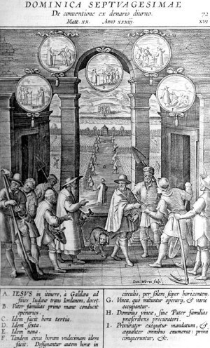
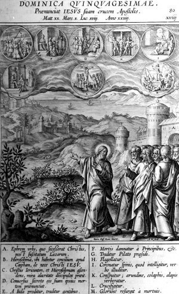
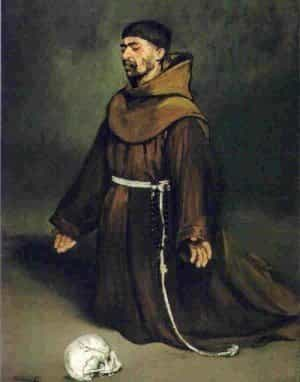
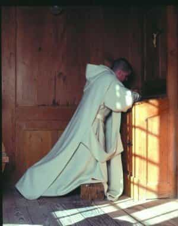

< < < Back
Turning A Page At The Beginning Of Lent – Return Of Kings
This week I wanted to say a few words about Lent, and about contemplation (to close our series on prayer); finally, I’d like to ask your opinions, about where to go from here.
The Lenten fast is the most important of the year, and the strictest. A Christianity is about incorporation into Christ, and restoring our likeness to Him by grace and imitation, the liturgical year immerses the faithful in the events of Christ’s life, and the Old Testament “types” thereof.
Lent is called in Latin “quadragesima,” which means “fortieth,” because the first Sunday of Lent falls on the fortieth day before Good Friday. The season recalls the forty years of the Hebrews’ wandering in the desert, the forty days of the Flood, and the forty days of the Lord’s fasting in the wilderness (cf. Luke 4). In our Lord’s forty days of fasting, the Fathers saw Christ healing human nature by prevailing, in human nature, over the temptations of the flesh, the world, and the devil; imitating Christ in His fasting is an imitation and participation in this.

Quadragesima Sunday is preceded by a further three weeks of “pre-Lent,” beginning with the Sunday of Septuagesima (Latin for “70th,” for it falls about 70 days before Easter); this recalls the 70 years of the Babylonian captivity. Septuagesima dwells on the theme of Adam and Eve’s expulsion from Paradise; from now to Easter, the Western Church will not sing ‘Alleluia,’ for the West’s tradition regards it as a celestial and paradisiacal word, which the banished and fallen man dares not utter (it contains part of God’s ineffable name); many places would even have a ceremony where a plaque with the word ‘Alleluia’ was buried, in remembrance of death entering the world after our banishment (though, contrarily, the Eastern Churches use the word more often during Lent, as a sign of longing for Paradise). This theme continues throughout Lent, as when the penitents are ejected from the Church on Ash Wednesday, and are strewn with dust and ashes with God’s words to Adam: “for dust thou art, and to dust thou shalt return.”
Sexagesima (the next Sunday) focuses on the Great Flood, sign of the just desserts of sin, and of the Last Judgment yet to come; Christ, and His Body the Church, were always interpreted by the Fathers as being a fulfillment of Noah’s Ark – a great vessel of salvation, by which the remnant of the just are saved from the inundation of God’s wrath. These themes also recur in the Lenten liturgy. Quinquagesima (the next Sunday, again) focuses on the thwarted sacrifice of Isaac, when God foreshadowed that He would send His own Son, rather than actually ask Abraham to do the same; God also then sent a ram in his place, with its horns caught in a nearby bramble-bush, as a token of the saving Victim yet to come.
In union, therefore, with Adam and Even in their sorrow; with Noah in the Ark for forty days and nights; with the Hebrews wandering in the desert; with the Jews, exiled in Babylon; with Christ, in the desert; we can keep the period of Lent as a for candor about our spiritual desolation, bearing the bitterness of the period as we look forward to the moment of deliverance. The best of us feel, betimes, the sting of our failures and shortcomings; we feel the pain of exile – being confused about God, not knowing if we believe, or even if we want to believe. And, even if we believe, of not knowing how to approach Him, how to make a beginning.
We ought not to be contumelious towards Him about this; but, Lent is certainly a season when we can come to God and tell Him, in all candor: “I feel like an exile; I am at a loss before You; I don’t know whether to hold the idea of You in contempt, or whether I myself would be contemptible for failing to repent and return to You; and in any case, I wouldn’t know how to start.” It is a season of exile, of bitterness, of pain, of longing and confusion, that has heard only the rumor of some far-off liberation. We need not be embarrased of our own sense of exile, therefore; rather, embrace it and endure the hardships of the season, offering them as a sacrifice, with entreaties that our exile be brought to an end. As one of the Matins Responsories for the season says:
R. Let the season of the Fast open unto us the gates of Paradise; let us great the time, praying and beseeching, that on the day of Resurrection we may glory in the Lord. V. Behold, now is the acceptable season; now is the day of salvation: let us therefore commend ourselves to God in great longsuffering, that in the day of Resurrection we may glory in the Lord.

Now, I want to say a few words about contemplation, to conclude the series on prayer.
I debated how much to say about this, for the Church has always closely guarded the teaching on contemplation, and warns that serious, spiritual dangers lie in wait for the contemplative, that only experience and grace can resolve. I will therefore limit myself to some very brief remarks.
In Christian contemplation, the soul seeks to commune with God; while the Church does not in any way disavow the essential truthfulness and usefulness of her doctrines, she nevertheless admits that God, as He is in Himself, is ultimately beyond any and all things we may say about Him. This does not mean that “anything” describes God equally well, it just means that even the truest terms cannot define or exhaust Him, in His fulness. Christian contemplation seeks to behold God in the simple gaze of Faith and Charity, therefore, without any definite thought intervening.
In the first place, this means that a man should always mistrust and reject any visions, sounds, etc., that occur to him in contemplation; they may be harmful and, even at best, they are inferior to contemplation itself. The trick, is to focus the will upon God, while the intellect strives to be free from any definite concept. The great work called the Cloud of Unknowing, spoke metaphorically of a “cloud of forgetting,” by which the soul forgets everything it knows from the world of creatures, and a “cloud of unknowing,” the “divine and brilliant darkness” in which God dwells beyond the power of any human thought’s penetration. All the soul should experience, is an impulse of the will to flee sin, and to cleave to God.

Because it is difficult for the novice in this process to think “no thoughts” for a sustained period of time, a common form of training in prayer is to practice thinking only “one thought,” and from there to transition to “no thought.” One commonly does this by repeating a concise phrase, or even a single word, that crystallizes the aforementioned process, fixing the intent upon God and letting Him worry about understanding Himself.
I shared some prayers, and brief prayer rules, at Jedithun; but if, when praying with fixed prayers, one feels a particular connection to God, do not be afraid gently to remain present before Him, in this simplicity of intent, in silence. If you are moved to pour your heart out at such a time, do so, but do not make the mistake of seizing on such a moment to “milk” the prayer. Neither try to force it, nor be anxious about holding it; God is in charge of it. For me the purest moments of “normal” prayer, are these silences that come, and in themselves they are already a glimpse of the kind of contemplation I’ve been describing. Our formal prayers, in the best of times, will help prepare us for such moments; and such moments will impart greater depth to our formal prayers.
These glimpses also help us to undertand the goal of a more deliberate effort at contemplation. For those who wish to pursue it, I recommend the Cloud of Unknowing, and the writings of St. John of the Cross. A more systematic approach is also taken in Fr. Garrigou-Lagrange’s “Christian Perfection,” and “The Three Stages of the Interior Life.”

Finally, a question:
I wanted to give some basics on prayer, because this site is about self-improvement, and I wanted to this information for interested men. Now, those articles are up, for any men who become interested in the future. At this point, in keeping with the spirit of Lent (exile and repentance), I had been thinking of going into the crisis plaguing Western civilization for the past 500 years, and exploring the history of the ideology that has brought us to our present, absurd state of “social justice,” and all the rest… so that we, too, could repent and seek an end to our exile.
But I was a little bit surprised to find that some men think of (real) religion as “blue pill,” so I had thought of perhaps going through the basic arguments for God’s existence, aiming to show that rational, masculine men have always embraced God and, if anything, atheism is historically a phenomenon that patriarchy would associate more with immaturity or effeminacy, and a maladapted intellect.
But then, it occurred to me that perhaps the most helpful thing, would be a systematic introduction to philosophy in the Western Tradition, because if people haven’t learned to think clearly, there is no point introducing logical arguments. I am often surprised by how many men, who think of themselves as “smart” or “logical,” nevertheless fail to grasp even the first premises of their own arguments, to say nothing of clear thought more generally.
What do you men think? Which of these three, would it be best to do next?
Read More: Why Theology Is A Man’s Discipline